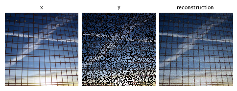

import deepinv as dinvIntroduction to Equivariant Imaging
Train a neural network to solve an image inpainting inverse problem, using perspective-EI and the deepinv library.
torch imports
import torch
from torch.utils.data import DataLoader, random_split
from torchvision.datasets import ImageFolder
from torchvision.transforms import Compose, ToTensor, CenterCrop, Resize
from torchvision.datasets.utils import download_and_extract_archiveDefine inpainting experiment to reconstruct images from images masked with a random mask:
physics = dinv.physics.Inpainting((3, 256, 256), mask=0.6, device="cpu")Load Urban100 dataset of natural urban scenes:
Download dataset from HuggingFace
download_and_extract_archive(
"https://huggingface.co/datasets/eugenesiow/Urban100/resolve/main/data/Urban100_HR.tar.gz?download=true",
"Urban100",
filename="Urban100_HR.tar.gz",
md5="65d9d84a34b72c6f7ca1e26a12df1e4c"
)train_dataset, test_dataset = random_split(
ImageFolder("Urban100", transform=Compose([ToTensor(), Resize(256), CenterCrop(256)])),
(0.8, 0.2)
)
train_dataloader, test_dataloader = DataLoader(train_dataset, shuffle=True), DataLoader(test_dataset)As these scenes are imaged with a camera free to move and rotate in the world, we can impose perspective invariance on the unknown image set \(x\in X\). Define measurement consistency and EI losses:
transform = dinv.transform.Homography(theta_max=10)
losses = [
dinv.loss.MCLoss(),
dinv.loss.EILoss(transform)
]For training, use a small UNet for the model with Adam optimizer:
model = dinv.models.UNet(
in_channels=3,
out_channels=3,
scales=2,
circular_padding=True,
batch_norm=False
)
optimizer = torch.optim.Adam(model.parameters(), lr=1e-3, weight_decay=1e-8)Train the model using deepinv’s Trainer:
model = dinv.Trainer(
model=model,
physics=physics,
online_measurements=True,
train_dataloader=train_dataloader,
eval_dataloader=test_dataloader,
epochs=1,
losses=losses,
optimizer=optimizer,
verbose=True,
show_progress_bar=False,
save_path=None,
device="cpu"
).train()The model has 444867 trainable parameters
Eval epoch 0: PSNR=10.078
Train epoch 0: MCLoss=0.002, EILoss=0.021, TotalLoss=0.023, PSNR=15.948Show results of a pretrained model trained using a larger UNet for 40 epochs:
Load pretrained model from HuggingFace
model = dinv.models.UNet(
in_channels=3,
out_channels=3,
scales=3,
circular_padding=True,
batch_norm=False
)
ckpt = torch.hub.load_state_dict_from_url(
dinv.models.utils.get_weights_url("ei", "Urban100_inpainting_homography_model.pth"),
map_location="cpu",
)
model.load_state_dict(ckpt["state_dict"])<All keys matched successfully>x, _ = next(iter(train_dataloader))
y = physics(x)
x_hat = model(y)
dinv.utils.plot([x, y, x_hat], ["x", "y", "reconstruction"])